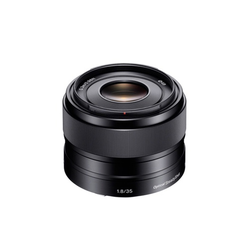

Sony E 35mm f/1.8 OSS
Q 4,480.00
Montura E APS-C
52.5mm (35mm Equivalente)
Rango de Apertura: f/1.8 a f/22
Un Elemento ED & Dos Elementos Asféricos
Motor de Autofocus Lineal; Enfoque interno
Estabilizador Optico SteadyShot
Distancia minima de enfoque: 12″
Diametro de filtro: 49mm
Siete láminas de diafragma circular
Descripcion
El Sony E 35 mm f / 1.8 lente SEL35F18 OSS es una lente agudo, primordial para camaras Sony E-mount, incluyendo el Alpha NEX-5R, Alpha NEX-6 y las videocamaras Handycam NEX. Es un objetivo compacto, longitud focal fija que es equivalente a 52,5 mm en la equivalencia de 35 mm. Una rapida apertura maxima de f / 1.8 significa la lente es ideal para la captura de imagenes borrosas libre de los sujetos en movimiento rápido y para la retención de imagenes nitidas con poca luz. Una tranquila controles de motores lineales centran mientras que un in-lente pisar controles de motor de apertura, juntos ofrecen una accion de lente suave y practicamente en silencio, lo que es ideal para la grabacion de video. Enfoque manual directo tambien se ofrece lo que permite control fino de enfoque manual y es operable incluso en el modo de enfoque automatico. Sistema de estabilizacion de imagen optico incorporado de Sony proporciona aproximadamente 4 paradas por valor de control de sacudida, haciendo la lente aun mas funcional en condiciones de poca luz y un gran cuando el seguimiento de objetos en movimiento en video.
Opticas mejoradas han reducido la aberracion esferica y proporcionar un contraste uniforme a traves de las imagenes de sensores y nitidas incluso cuando se dispara muy abiertos en f / 1.8 de apertura. La abertura circular ayuda a crear bokeh suave y circular.